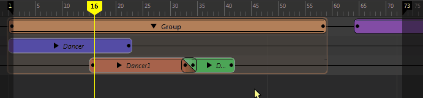

您可以采用在时间编辑器中编辑常规动画片段的相同方式编辑组片段。创建组片段时，您仍可修改其内部的片段，然后再次关闭组片段并使这些更改反映出来，而不必重新创建组片段。
扩展组片段内的片段
如果需要扩展片段以超出组片段的长度，请按 D 键并拖动片段。

编辑组片段中的计时运算符
由于您可以将计时运算符（如时间扭曲和速度曲线）添加到组片段，且不会影响其中包含的片段计时，因此有时您可能需要对其中包含的单个片段进行编辑。您无需将这些片段从组片段中移除即可编辑，并且可以为它们创建本地时间选项卡。请参见为组片段创建本地时间(Local Time)选项卡。
从组片段中移除片段
要展开组片段，请在其上单击鼠标右键，从时间编辑器片段(Clip)上下文菜单中选择“解组”(Ungroup)
 ，然后将其拖动到另一个轨迹上。
，然后将其拖动到另一个轨迹上。